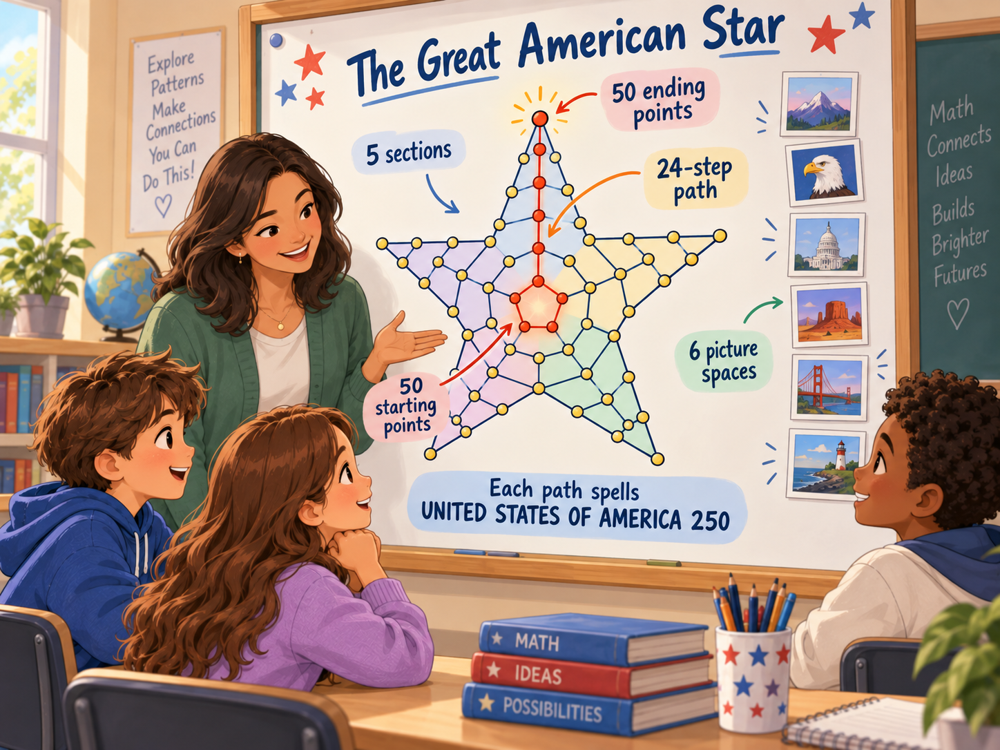

Younger Learners
Students can focus on:
- following a path
- recognizing patterns
- symmetry
- counting
- sequential choices
- seeing mathematics create a visual design
- understanding that many different routes are possible
America 250 · Mathematics · Art · Education
Explore mathematics, create personal art, and celebrate America’s 250th anniversary — giving every student a way to participate and see their place in a larger shared story.
The Great American Star is a mathematical-art project built from a modified Pascal-style structure.
Its design contains 50 starting points and 50 ending points, representing the 50 states, and 359,277,250 possible mathematical paths — designed around the idea of an individual mathematical path for every American.
Students explore mathematical patterns, choose a path of their own, and turn it into personal artwork that connects individual expression with belonging to one American star.

Personal creation · Belonging
The Great American Star turns a large national idea into something personal. Each student chooses one path from hundreds of millions of possibilities and makes it their own. The result is more than a mathematics activity. It gives students a way to connect an individual choice with a larger shared American story.
Mathematics · America 250
The patriotic meaning is built into the structure itself: 50 starting points, 50 ending points, and 359,277,250 possible paths coming together into one American star. Students do not only learn about the symbol — they participate in it.
359,277,250 possible paths. One American star. This one is mine.
See the possibilities
Some mathematical ideas can be calculated on paper but are difficult to truly visualize.
The Great American Star turns an abstract counting structure into something students can see, follow, and interact with.
A path travels through a branching mathematical structure according to simple rules. As those choices continue, the number of possible routes grows dramatically.
unique possible mathematical paths
Students do not simply hear a very large number. They can explore how an enormous number of possibilities can grow from a relatively simple mathematical structure.
Built into the structure
The patriotic meaning of The Great American Star is not simply decoration placed on top of the mathematics.
It is built into the mathematical structure itself.
Representing the 50 states
Designed around the idea of an individual mathematical path for every American
All of those mathematical possibilities belong to one five-pointed American star.
50 states.
Hundreds of millions of individual paths.
One American star.
E Pluribus Unum
Out of Many, One
Many states. Many individuals. Many paths. One larger whole.
An individual discovery
Each student can select a mathematical path and watch it travel through the star.
The path is only one among hundreds of millions of possibilities — yet for that student, it becomes their own path.
Instead of simply hearing: “There are 359,277,250 possibilities,” the student can experience:
“This one is mine.”
A very large mathematical idea becomes something the student can personally identify within the larger structure.
The mathematics remains the same — but the experience becomes personal.
In a nation of hundreds of millions, each student can see one mathematical path as their own — a personal place within the larger whole. Each student is individual, yet together those individual journeys belong to one shining American star.
Reasoning meets expression
After exploring a path, students can use it as the foundation of a personalized piece of mathematical art.
The experience demonstrates that mathematics is not limited to equations on a page.
Mathematical rules can create structure, symmetry, patterns, visual form, enormous numbers of possibilities, and artistic design.
The Great American Star can therefore serve as an engaging bridge between mathematical reasoning and creative visual expression.
A flexible starting point
Teachers do not need to teach the complete mathematical structure in order to use The Great American Star.
The same experience can be explored at different levels of mathematical depth.
Students can focus on:
Students can explore:
Students can investigate:
The teacher chooses the depth.
From first question to discussion
The Great American Star can be introduced in one class period without requiring a special curriculum.
Demonstrate how one path travels through the mathematical pattern.
How many different mathematical paths do you think could exist inside one star?
Let students estimate before revealing the answer.
359,277,250 possible paths.
Discuss how relatively simple repeated mathematical rules can create an enormous number of possibilities.
50 starting points.
50 ending points.
50 states.
Hundreds of millions of possible paths.
One star.
Students select and follow an individual path through the star.
Students transform their path into a personalized Great American Star.
Possible questions:
The Great American Star can be used as:
It is designed to complement classroom learning rather than replace a mathematics curriculum.
Introduce the star, demonstrate a path, and allow students to explore the experience.
Introduce the mathematics and patriotic structure, explore paths, create individual stars, and discuss what students observed.
Explore Pascal’s Triangle, combinatorics, path counting, probability, and the mathematical structure behind the total number of possible paths.
Student Privacy
Images selected by a student are processed locally in the student’s browser as part of creating the personalized artwork.
They are not uploaded to or stored by The Great American Star, and the website owner cannot view or access the images students select through the website.
The finished personalized artwork is also generated within the browser and downloaded directly by the user.
The feedback system does not receive the student’s selected images, finished artwork, or personal message.
It records only the limited feedback information the user chooses to submit, such as a rating, recommendation, and optional written feedback.
For classroom use, teachers may also choose to have students use school-approved images, symbols, artwork, or other non-personal materials instead of personal photographs.
Let the question lead
The purpose of The Great American Star is not simply to tell students another mathematical fact.
It is to create a question:
“How can that possibly work?”
A student may first notice the star.
Then discover that it contains hundreds of millions of mathematical paths.
Then learn that the 50 states and a nation-scale number of individual paths are represented within the mathematics.
And then begin asking how simple mathematical rules can create something so large.
That curiosity is where the lesson begins.
The Great American Star contains hundreds of millions of possible mathematical routes.
Each follows the same underlying mathematical rules.
Each belongs to the same larger structure.
Yet every student can explore one individual path within it.
Mathematics can be enormous — while still giving the student something personal to discover.
Create Your Great American StarExplore the mathematics with a classroom-ready question.
More teacher guides, lesson plans, and mathematical investigations are planned.
Probability Exploration
What happens when 2 students choose random paths?
What about 20 students?
Compare The Great American Star with the classic birthday problem and discover why 190 possible student-pairs still produce an extremely small chance of two students choosing the same path.
Explore the Birthday Problem →Path Counting Exploration
Every starting point can reach every ending point — so why do some starting points generate millions more paths than others?
Explore how position, branching, and the boundaries of the star change the number of possible routes.
Explore the Path Counts →